Catchy Title

URL
(Human readable addressing)
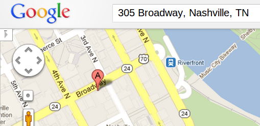
But we really want to go here: 36.16085, -86.773903
(more on that shortly)
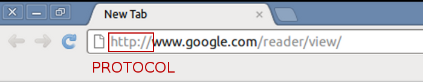
HTTP
But what is a protocol?
http://tweattwaddle.blogspot.com/2012/01/kitty-and-vicky-visit-japan.html
Other protocols you probably know of... FTP, POP, SMTP, SSL, DHCP, TCP, SSH, ...
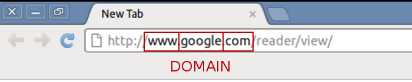
subdomain.SLD.TLD
Common TLD's: .com, .net, .org, .biz
Examples of SLD's: google, yahoo, barcampnashville
Typical subdomains: www, mail, blog
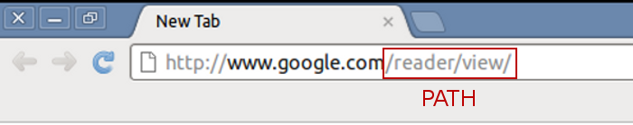

http://manypathsonecommunity.co.uk/lifepathreadings.html
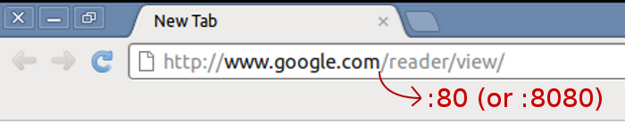
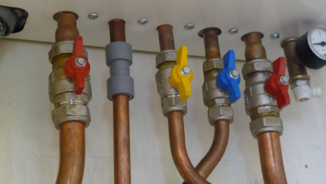
http://www.beggsandpartners.com/plumbing-heating/overview/
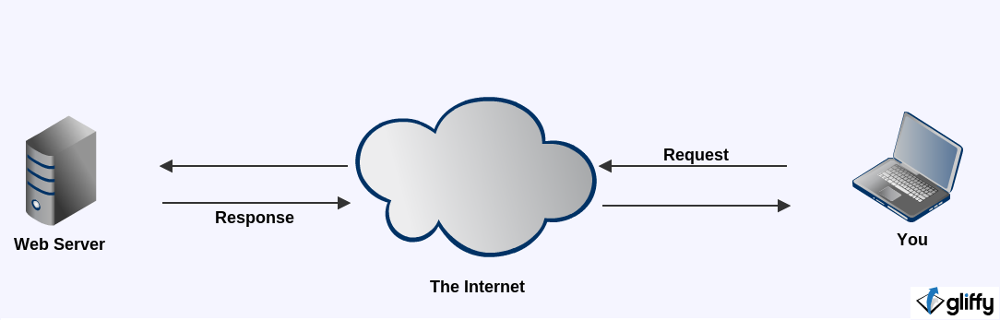
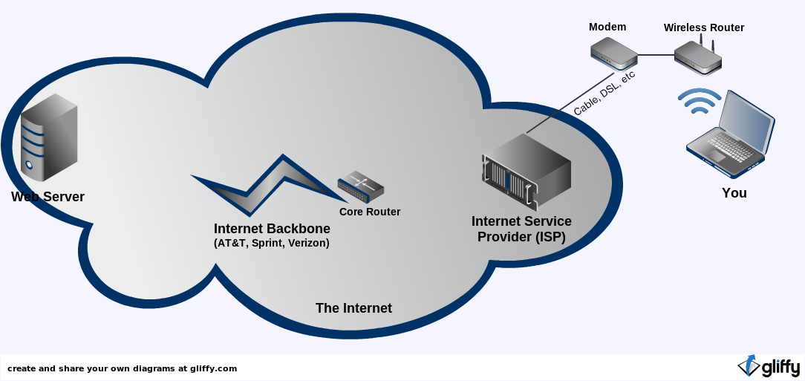
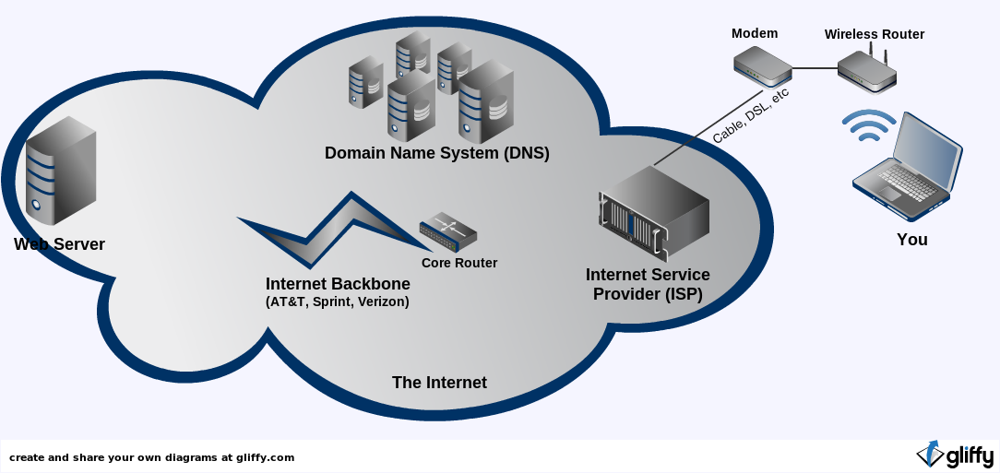
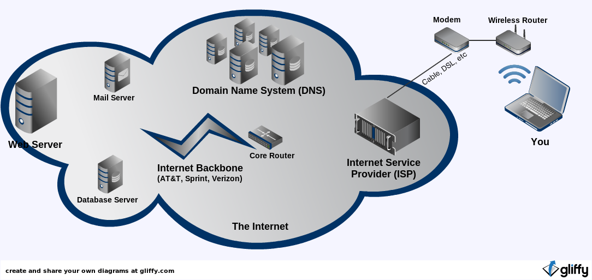
We just typed in "http://www.google.com/reader/view/" ...
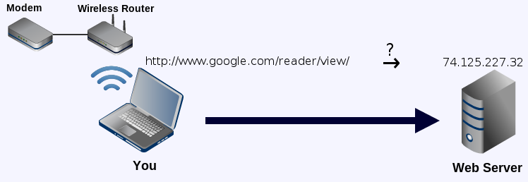
We need a translator!
Translating domains into Internet Protocol (IP) addresses
http://www.witnessthis.co.za/2009/10/05/incentive-to-work/telephone-exchange/
The first machine to know the answer wins!
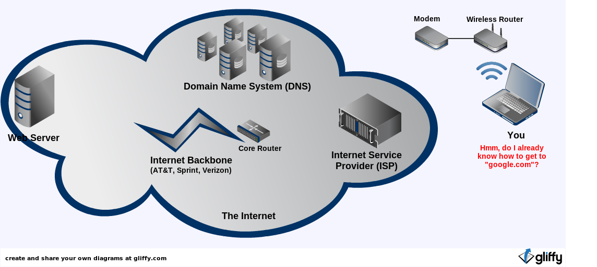
The first machine to know the answer wins!
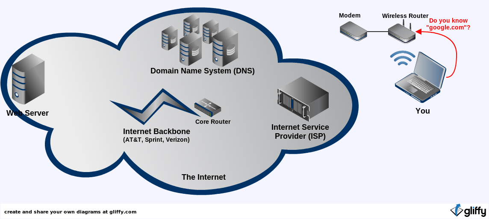
The first machine to know the answer wins!
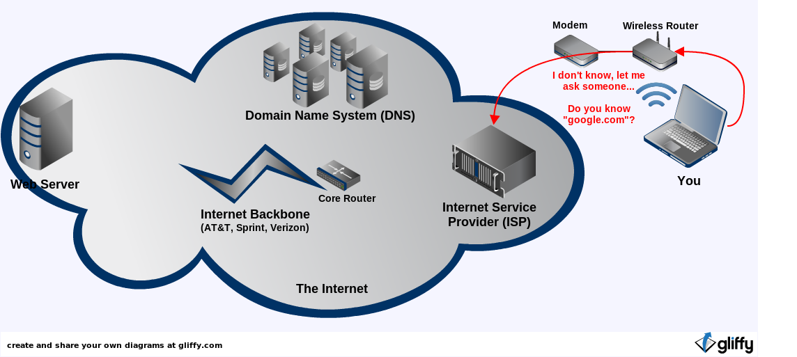
The first machine to know the answer wins!
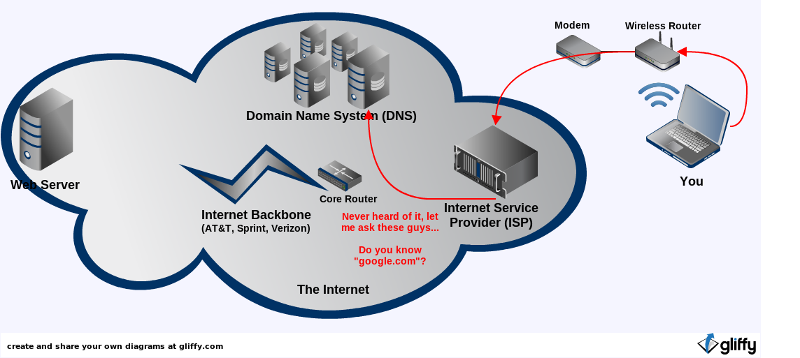
The first machine to know the answer wins!
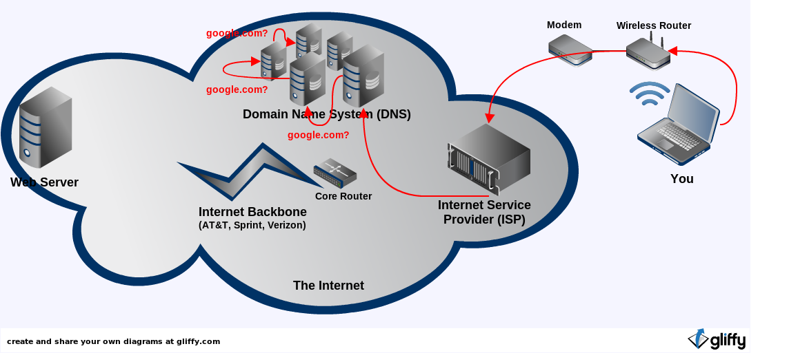
The first machine to know the answer wins!
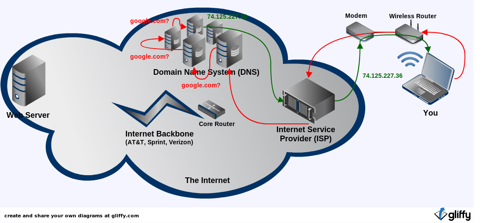
Now we know where to go to get content from Google:
74.125.227.36
But what is that number?
It's an IP - address.
A machine-readable identifier for a network interface
(not for the whole machine!)
Set of four numbers between 0 and 255 (that's 8 bits each, making a 32-bit address):
| 74. | 125.227.26 |
| Network Identification (1-126, Class A) | Host (interface) Identification |
Your machine has an IP address, too!
But how did you get it?
Why the need for a new version of IP addressing?
Seems to work just fine...
We started running out on April 15, 2011
One pixel per address...
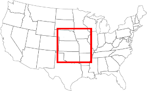 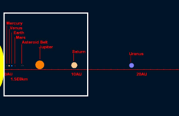 http://pthree.org/2009/03/08/the-sheer-size-of-ipv6/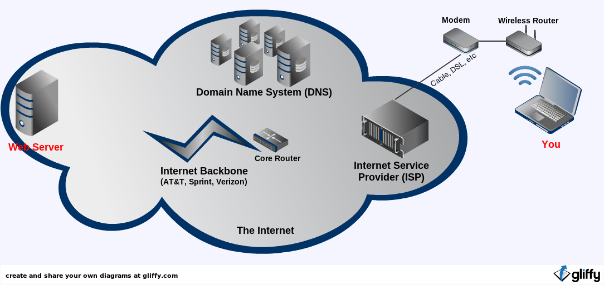
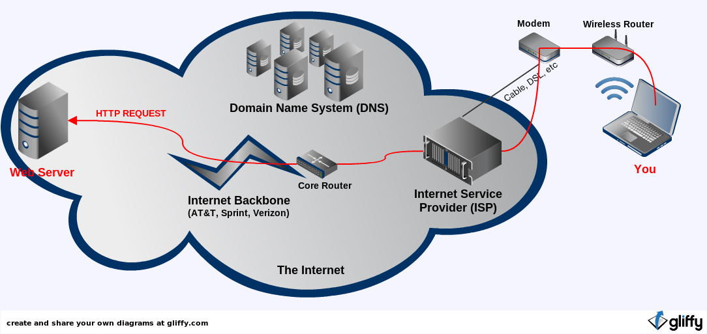
http://www.google.com/reader/view/
GET /reader/view/ HTTP/1.1
Host: www.google.com
Accept: text/html,application/xhtml+xml,application/xml;q=0.9,*/*;q=0.8
Connection: keep-alive
Cookie: 1%2FcA8CoqFFr9udmhMd2NpbtBcfH9Rzdd9fE5ISkdmB%2F2012-10-09+22%3A21%3A59
User-Agent: Mozilla/5.0 (X11; Linux i686) AppleWebKit/537.4 (KHTML, like Gecko) Chrome/22.0.1229.79 Safari/537.4LAMP
http://www.google.com/reader/view/
HTTP/1.1 200 OK
Date: Mon, 28 Mar 2016 09:15:00 GMT
Server: Apache/1.3.3.7 (Unix) (Red-Hat/Linux)
Last-Modified: Mon, 08 Jan 2016 23:11:55 GMT
Cache-Control: no-cache, no-store, max-age=0, must-revalidate
Content-Encoding: gzip
Content-Type: text/html; charset=UTF-8
Content-Length: 220
Expires: Fri, 01 Jan 2020 00:00:00 GMT
Pragma: no-cache
X-Reader-Google-Version: 553-000
<!DOCTYPE html><html> <head><meta ...And now the HTML and CSS are rendered by the browser

(This is not part of my presentation.)
What about JavaScript? Where does that code run?
Now that the browser has the code, it runs it against
the rendered HTML and CSS
(at least, the html and css that has already been processed)
SSL (TLS)- encrypt data sent to and from a client/server
But how do you know you can trust that server's certificate?
A Certificate Authority (CA) guarantees
the holder of the certificate is who they say they are.
(Examples of ROOT CA's: Verisign, Thawte, GeoTrust, etc)
They are the gatekeepers.

But what if the web site didn't want to pay up to $3,000
for a certificate from a root authority like Verisign?
I hear you can get one for $8 some places...
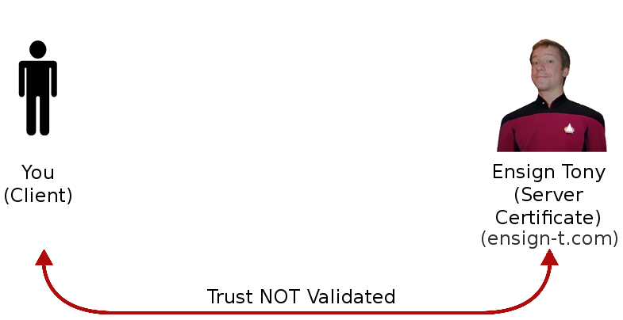 http://datacenteroverlords.com/2011/09/25/ssl-who-do-you-trust/
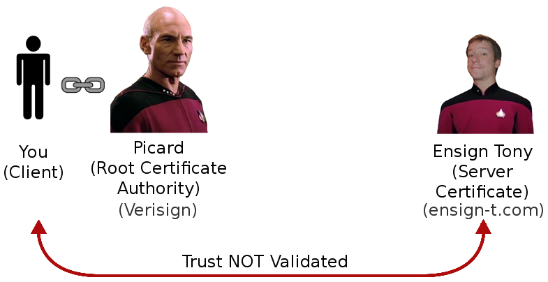 http://datacenteroverlords.com/2011/09/25/ssl-who-do-you-trust/
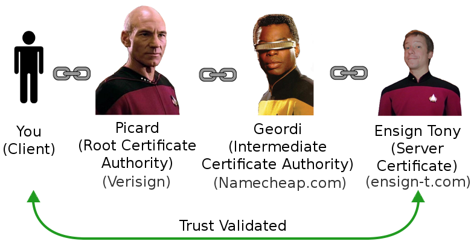 http://datacenteroverlords.com/2011/09/25/ssl-who-do-you-trust/